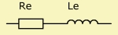
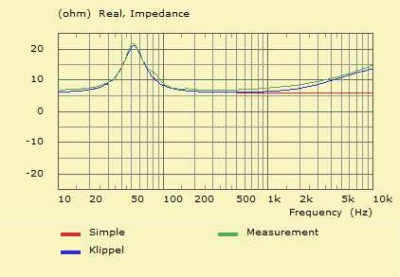
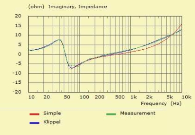
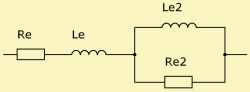
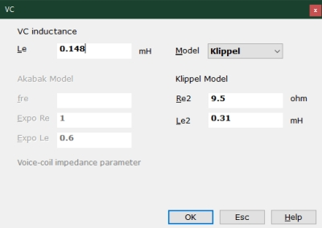
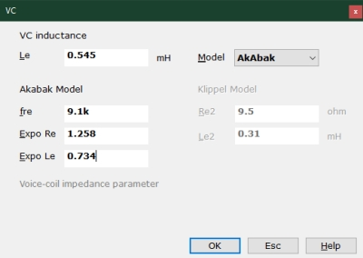

LE Voice Coil Parameters
| Home | LE-Part | Param Editors |
 |
 |
 |
 |
 |
 |
 |
 |
Components, which feature an electro dynamic motor have a parameter called "VC", which stands for Voice Coil.
VC specifies all parameters, which make the voice-coil-impedance frequency dependent. The effect of VC is in the upper frequency band, typically above the Fundamental Frequency fs of the transducer. Below fs the impedance of the voice coil is approximately equal to the DC-resistance of the voice coil Re.
Zvc is the voice-coil impedance in the model of the electro-dynamic transducer.
The voice-coil inductance Le is the dominant component of Zvc. Only in Model=[Klippel, Low Frequency] Le behaves like an inductance with Z(Le) = jωLe otherwise Z(Le) features a non-linear relation with respect to frequency. In any case it is always specified with units Henry or milli-Henry.
Simple Voice Coil Model
At low frequencies Zvc it is comprised of the voice coil resistance Re and an inductance Le.
Zvc = Re + jω·Le
Advanced Voice Coil Models
Advanced voice coil models simulate the effect of eddy currents and other induction effects. AKABAK supports a range of voice coil models.
The plots at the side display the real and imaginary parts of the electric driving point impedance. The green curve is measured and the red and blue are model-curves. Obviously the blue curve provides a better fit than the red curve, which is the above simple model.
Klippel Model
The Klippel model consists of two blocks. The first is a series connection of the resistance, Re and an inductance, Le. The second is formed by the parallel connection of the resistance Re2 and the inductance, Le2. Values for the components are best produced by the Klippel driver measurement system. It is also possible to use the driver identification tool of VACS.
Zvc = Re + jω·Le + 1/Yvc2
Yvc2 = 1/Re2 + 1/(jω·Le2)
Akabak Model
The Akabak model is a black box model, which makes use of exponential functions for the resistance and reactance. Usually this model yields satisfactory results up to high frequencies. It is also possible to combine the Akabak and the Klippel model. Values of the Akabak model can be retrieved with the help of the driver-parameter identification tool of VACS.
Zvc = Re(f) + j·Xe(f)
Re(f)
Re is the direct-current resistance of the voice-coil and should be measured with a direct-current-meter. Eddy currents inside the pole-piece and other effects cause a rise of Re at high frequencies. The controlling parameters are the frequency fre and the exponent ExpoRe:
Re(f) = Re·(1 + f/fre)ExpoRe
Typically fre = 2kHz .. .20kHz and ExpoRe > 1. The value of fre is much larger then the fundamental resonance of the driver: fre >> fs.
Xe(f)
The approximation for the voice-coil reactance Xe is:
Xe = (ω·Le)r
r = (1 + ExpoLe·q2)/(1 + q2)
q = ω·Le/Re
This formula has been determined empirically. The parameter ExpoLe can be in the range of ExpoLe = 0 ... 3. In most cases a good fit is obtained with ExpoLe = 0.5 ... 0.7. Please note, that although Le is given in Henry, Le is just a constant with no relation to a real inductivity-parameter unless ExpoLe = 1 in which case Xe = ω·Le.
Formula
The name of the parameters are equal to the formula-identifiers:
|
| |||||||||||||||||||||||||||||||||||||||